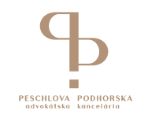

+++
title = "PESCHLOVÁ PODHORSKÁ advokátska kancelária, s.r.o. - Office manager"
slug = "66"
+++

<div class="container mb-5">
    <div class="row justify-content-around">
        <div class="col-6 col-md-2 mt-3">
        </div>
        <div class="col-md-8">
            <h1>PESCHLOVÁ PODHORSKÁ advokátska kancelária, s.r.o.</h1>
            <h2>Office manager</h2>
            <p>
                <strong>Miesto: </strong>Bajkalská 2B, Bratislava /areál národného futbalového štadióna/<br/>
                <strong>Forma: </strong>TPP (celý úväzok)<br/>
                <strong>Flexi faktor: </strong>vieme si predstaviť aj prácu na skrátený úväzok /6 hodinový/, 
                                                príležitostný home office,
                                                "prozamestnanecky" orientovaný prístup v prípadoch potreby riešenia osobných záležitostí
                                                platené voľno nad rámec dovolenky medzi vianočnými sviatkami a novým rokom
                                                <br/>
                <strong>Plat: </strong>1200 € pri plnom úväzku<br/>
                <strong>Očakávaný nástup: </strong>Ihneď<br/>
                <strong>Dátum pridania ponuky: </strong>07.12.2022<br/>
            </p>
            <h2>O firme </h2>
            <p>
              <a href="https://www.peschlovapodhorska.sk/" target="_blank">www.peschlovapodhorska.sk</a>
              </br>
                Sme advokátska kancelária, ktorej základ tvoria dve advokátky Jana Peschlová a 
                Katarína Podhorská Surkošová a spolu s našimi koncipientami poskytujeme právne služby 
                viac ako 16 rokov. Špecializujeme sa na oblasť obchodného, občianskeho práva /osobitne na právne vzťahy týkajúce sa práva obchodných spoločností, právnych vzťahov k nehnuteľnostiam a majetkové práva/ a v neposlednom rade na oblasť pracovného práva. V súčasnosti sa vo väčšej miere zameriavame aj na oblasť práva finančného sprostredkovania, práva elektronických komunikácií, mediálnych služieb a práva obchodu s potravinami. Zároveň sme obidve matky, ktoré chápu potrebu vyvažovať prácu s rodinným a sociálnym životom a v rovnakom duchu majú snahu pristupovať aj k svojim zamestnancom a takýto priestor na rozvoj aj iného ako pracovného života svojich zamestnancov sa snažia podporiť.

              </p>

            <h2>Náplň práce</h2>
         <ul>
          <li> Organizačne zabezpečenie chodu kancelárie
          <li> Elektronické podania na súdy, Obchodný register, iné orgány štátnej správy
          <li> Administratíva spojená so zaručenou konverziou dokumentov /scanovanie a pripájanie elektronických pečatí pre overenie konverzie listiny na el. dokument/
          <li> Výkazy úkonov a fakturácia /nie vystavovanie faktúr ani žiadne účtovné operácie, len prípravné práce/
          <li> Pošta
          <li> Objednávanie kancelárskych potrieb a ostatných vecí potrebných pre kanceláriu
          <li> Udržiavanie poriadku v spisoch, zakladanie spisov a ich správa
          <li> Administratívna podpora advokátov a koncipientov /príprava jednoduchých podaní, formátovanie, finalizácia podaní a pripravenej dokumentácie/
          <li> Príprava dokumentov na podpis a zabezpečenie podpisov, prípadne overenia podpisov u notára

            </ul>
            <h2> Požiadavky </h2>
            <ul>
              <li> Anglický jazyk B2/ C1, schopnosť komunikovať v AJ, hlavne písomne, schopnosť prekladať jednoduché právne texty a výkazy úkonov do AJ
              <li> Práca s PC (word, excel + elektronické podania na súdy /komunikácia cez Slovensko SK a komunikácia s jednotlivými orgánmi štátnej správy elektronicky
              </ul>
      
            <h2>Doplňujúce info</h2>
                 <p>
                  V súčasnosti je sídlo našej kancelárie na Žižkovej ulici 1A, Bratislava. Začiatkom 
                   januára 2023 sa budeme sťahovať do nových priestorov na Tehelnom poli, do areálu 
                   Národného futbalového štadiónu.</br>
                </p></br>
           
            <h2>Ďalší postup</h2>
<p>Kontaktnou osobou pre poskytovanie ďalších informácií o ponuke je JUDr. Katarína Podhorská Surkošová. </br>
Mail: <a href="mailto:surkosova@akpeschlova.sk">surkosova@akpeschlova.sk</a><br/>
Telefón: 0905 44 6000 </br>
              
               
              </p>

        </div>
        <div class="col-md-2"></div>
    </div>
    <div class="row">
        <div class="col offset-md-2 mt-5">{{< back >}}</div>
    </div>
</div>
